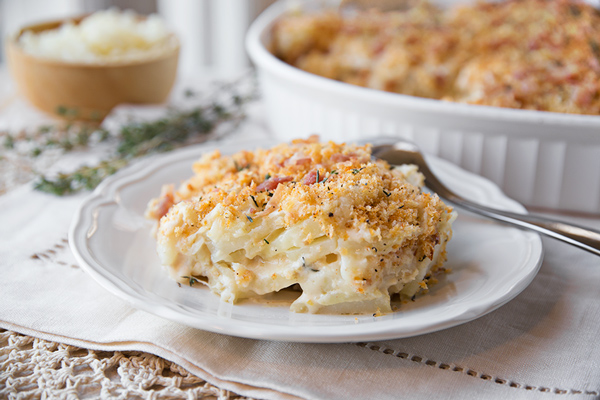

Recipe for Potatoes au Gratin

Image source: The Cozy Apron
Description
This is a quick look at Potatoes au Gratin which I will be throughout this
article showing you how to replicate in order to make this creamy delicious
potato dish. The dish will take some time out of your day in order to properly
execute but in the end the dish will be extremely worth it and is a recipe that
should be in everybody's recipe repertoire.
Ingredients
- Yukon Gold Potatoes
- Butter
- Garlic
- Cornstarch
- Pepper
- Salt
- Milk
- Cheese
- Panko Bread Crumbs
Steps
- Add butter to a pan and allow to melt
- Once melted add some minced garlic to the butter and allow
to slightly brown
- Add cornstarch, salt, and pepper and stir until dissolved
- Once dissolved slowly add Milk while continuing to stir to
make the sauce
- Once sauce thickens, remove pan from stove add cheese
and allow to melt
- Cut Yukon Gold Potatoes into circular discs and add to a bowl
- Pour sauce into bowl with the potatoes and mix to fully
coat the potatoes
- Butter bottom of a casserole dish and add potatoes into dish
evenly spreading them out.
- Add more cheese and panko breadcrumbs to the top and bake until golden
brown ontop and potatoes are cooked
- Serve and enjoy!